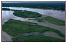
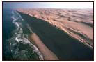
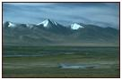
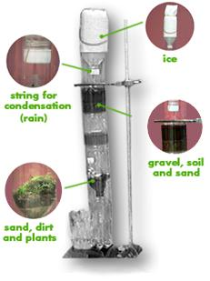
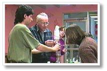

| |
Habitat |
What is the landscape like where you live?
What kinds of things would you include if
you re-created your habitat on a small scale?
How would you describe these habitats?
Amazon River Basin
Namib Desert
Tibetan PlateauYou can design bottle habitats based one
of the Greatest Places or build one based
on where you live.Can you guess which habitat we re-created in this Eco-column?
Guess: Amazon or Namib or Tibet.

Dr. Williams building the Eco-column with us.Dr. Paul Williams invented a way of building enclosed habitats with plastic bottles. He has a book called Bottle Biology.

|
What kinds of insects could live in an Eco-column? How could you create an island in a bottle? Try to make a working waterfall! |
|
|
|
|
|
|
|
|
 Gathered by topic |
 Connected together |
 Index of ideas |
 Search |